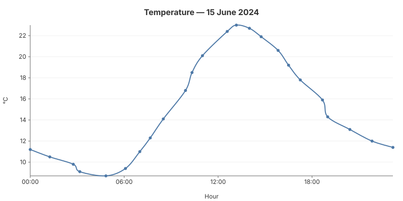

02 — Static Line
A full line chart with all the trimmings: axes with titles, grid lines, legend, CSS tooltips on hover, and entry animation. The data points are irregularly spaced in time (real weather-station readings, not one-per-hour) to show how gogal handles uneven temporal spacing on the X axis.

The code
// Irregular time spacing — not every hour
measurements := []struct{ hour, min int; temp float64 }{
{0, 0, 11.2}, {1, 15, 10.5}, {2, 45, 9.8}, /* ... */
}
for _, m := range measurements {
t := time.Date(2024, 6, 15, m.hour, m.min, 0, 0, time.UTC)
points = append(points, gogal.DataPoint{Time: t, Y: m.temp, Label: fmt.Sprintf("%.1f°C", m.temp)})
}
chart := gogal.NewLineChart(
gogal.WithVariant(gogal.Static),
gogal.WithTitle("Temperature — 15 June 2024"),
gogal.WithXTitle("Hour"),
gogal.WithYTitle("°C"),
gogal.WithGrid(true),
gogal.WithTooltips(true),
gogal.WithAnimate(true),
gogal.WithSmooth(true),
gogal.WithTimeFormat("15:04"),
gogal.WithYFormat("%.0f"),
)
chart.Add("Temperature", points)
WithVariant(gogal.Static) is the default — it enables axes, legend, grid, and tooltips. You don't need to specify it explicitly, but it makes the intent clear when reading the code.
WithTitle / WithXTitle / WithYTitle add text labels to the chart and axes. Titles are positioned automatically based on the chart margins.
WithGrid(true) draws horizontal grid lines aligned to Y-axis ticks. Grid lines use the theme's grid colour and sit behind the data.
WithTooltips(true) enables CSS-only tooltips — hover over any data point to see its label. No JavaScript required. The tooltip content comes from the
Label field of each DataPoint.
WithAnimate(true) adds a CSS stroke-dashoffset animation — the line draws itself on page load. Pure CSS, no JavaScript.
WithTimeFormat / WithYFormat control tick label formatting.
TimeFormat uses Go's time layout; YFormat uses Printf syntax.
Running it
task example:02
Outputs SVG to stdout and serves at http://localhost:1341.
API reference
| Function | Purpose |
|---|---|
WithVariant(gogal.Static) |
Full chart with axes, legend, tooltips |
WithTitle(s) |
Chart title |
WithXTitle(s) / WithYTitle(s) |
Axis titles |
WithGrid(true) |
Horizontal grid lines |
WithTooltips(true) |
CSS hover tooltips |
WithAnimate(true) |
Stroke-dash entry animation |
WithTimeFormat(layout) |
X-axis tick format (Go time) |
WithYFormat(fmt) |
Y-axis tick format (Printf) |
Data
| Time | Temp (°C) |
|---|---|
| 00:00 | 11.2 |
| 01:15 | 10.5 |
| 02:45 | 9.8 |
| 03:10 | 9.1 |
| 04:50 | 8.7 |
| 06:05 | 9.4 |
| 07:00 | 11.0 |
| 07:40 | 12.3 |
| 08:30 | 14.1 |
| 09:55 | 16.8 |
| 10:20 | 18.5 |
| 11:00 | 20.1 |
| 12:35 | 22.4 |
| 13:10 | 23.0 |
| 14:00 | 22.7 |
| 14:45 | 21.9 |
| 15:50 | 20.6 |
| 16:30 | 19.2 |
| 17:15 | 17.8 |
| 18:40 | 15.9 |
| 19:00 | 14.3 |
| 20:25 | 13.1 |
| 21:50 | 12.0 |
| 23:10 | 11.4 |